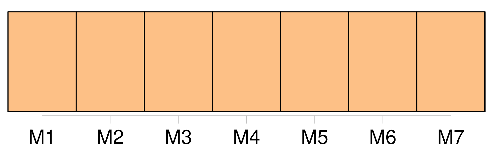

Longueur nb maillons : 11 mentions |
  |
[On] surprenait aussi des airs de tête significatifs pour les amants, et des attitudes négatives pour les maris. [85 phrases] [On] eût dit un événement de haute importance. [58 phrases] Quoique le petit vieillard eût le dos courbé comme celui d’ un journalier, [on] s’ apercevait facilement que sa taille avait dû être ordinaire. [204 phrases] A le voir, [on] eût dit d’ un homme froid et stupide. [34 phrases]
— Vous ne voyez que lui, m’ écriai -je impatienté comme un auteur auquel [on] fait manquer l’ effet d’ un coup de théâtre. [2 phrases] Un soir, le Français s’ aperçut qu’ [on] riait de lui dans les coulisses. [87 phrases] Elle refusa de boire, mangea peut-être un peu trop ; mais la gourmandise est, dit [-on] , une grâce chez les femmes. [32 phrases] Hommes et femmes, tous paraissaient habitués à cette vie étrange, à ces plaisirs continus, à cet entraînement d’ artiste qui fait de la vie une fête perpétuelle où l’ [on] rit sans arrière-pensées. [54 phrases] Le théâtre sur lequel vous m’ avez vue, ces applaudissements, cette musique, cette gloire, à laquelle [on] m’ a condamnée, voilà ma vie, je n’ en ai pas d’ autre. [35 phrases] Cessez de me parler ainsi, car l’ [on] se moquerait de vous. [149 phrases]
[On] n’ y fait plus de ces malheureuses créatures. |

|
La ressource peut être téléchargée sur la page Ortolang
Si vous avez des questions ou vous voyez des erreurs, merci d'envoyer un mail à silvia.federzoni89@gmail.com
Site développé par S. Federzoni (contact)